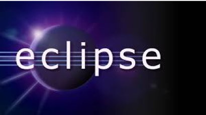

le système contrôle intelligent des appareils électroménager
sous le système Android
Tuteur de projet : Jingliang Zhang
Xueting SUN
Introduction

|
Le plan
- 1. Le système Android
- 2. Etude du système
- 3. Conception du système
- 4. Résultats et Discussions
1. Le système Android
- 1.1 Andy Rubin
- 1.2 Le système d'exploitation mobile
- 1.3 Logiciel : Eclipse
1.1 Andy Rubin
|
1.2 Le système d'exploitation mobile
  |
|
|
1.3 Le système d'exploitation mobile
|
|
|
- • Le noyau Linux avec les pilotes
- • Les bibliothèques logicielles
- • Un environnement d'exécution
- • Kit de développement d'applications
- • Un lot d'applications standard
1.4 Logiciel : Eclipse
|
 |
2. Etude du système
- 2.1 Sujet du projet
- 2.2 Analyse du projet
2.1 Sujet du système

2.1 Conception logique du système de commande
2.2 Analyse du système
|

|
3. Conception du système
- 3.1 Le mode connecté : Socket
- 3.2 Protocole de contrôle de transmissions
3.1 Le mode connecté : Socket
• La socket : Lien entre l'applicatif et la couche transport
• 3 informations obligatoires : L'address IP, Le protocole utilisé, Le numéro de port permet aux processus d’échanger des donnéesn’implique par forcément une communication par le réseau (ex socket unix)

3.1 La théorie de la communication
3.2 Protocole de contrôle de transmissions
3.1 La théorie de la communication TCP |
4. Résultats

4.2 L'interface d'application |

4.1 Le travaux de simulation |
Conclusion
- • Contrôle intelligent des appareils
- • Programme très compétitive
- • Suite possible : création une base de données